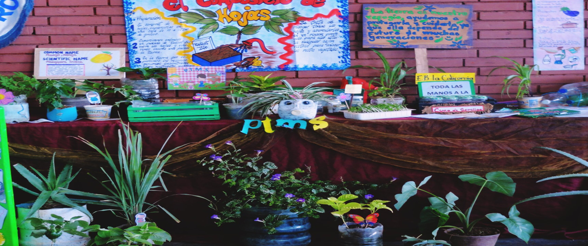

P.T.M.S Liceo Martin J. Sanabria
Programa Todas las Manos a la Siembra reivindica el amor por la siembra en centros educativos y comunidades del país. Esta política impulsada por el Ministerio del Poder Popular para la Educación (MPPE) ha ido incorporando la siembra como parte del currículo y práctica permanente en sus escuelas, generando experiencias socioproductivas que se generan desde las aulas de clases en las cuales estudiantes, el personal docente, administrativo y obrero, comunidades y familias contribuyen a la formación integral garantizando la seguridad y soberanía alimentaria en toda Venezuela.
PTMS es concebido además como un programa estratégico de la defensa integral del territorio, ya que apunta hacia la concreción de la soberanía alimentaria y elevación de la conciencia mediante el desarrollo de valores y principios socialistas que se evidencian en sus contenidos y metodologías agroecológicos materializada en la agricultura, vegetal, animal, acuícola y forestal, el cual vincula el equilibrio con la naturaleza y el desarrollo de los valores sociales, como la justicia, la solidaridad y el bien común.
